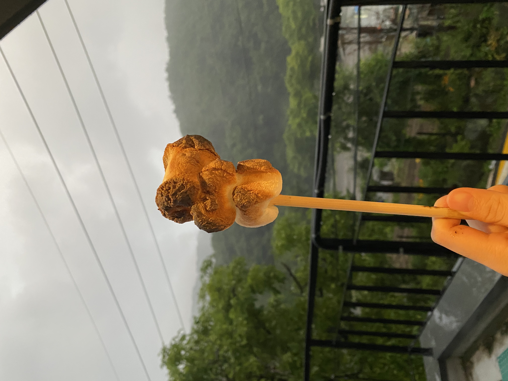
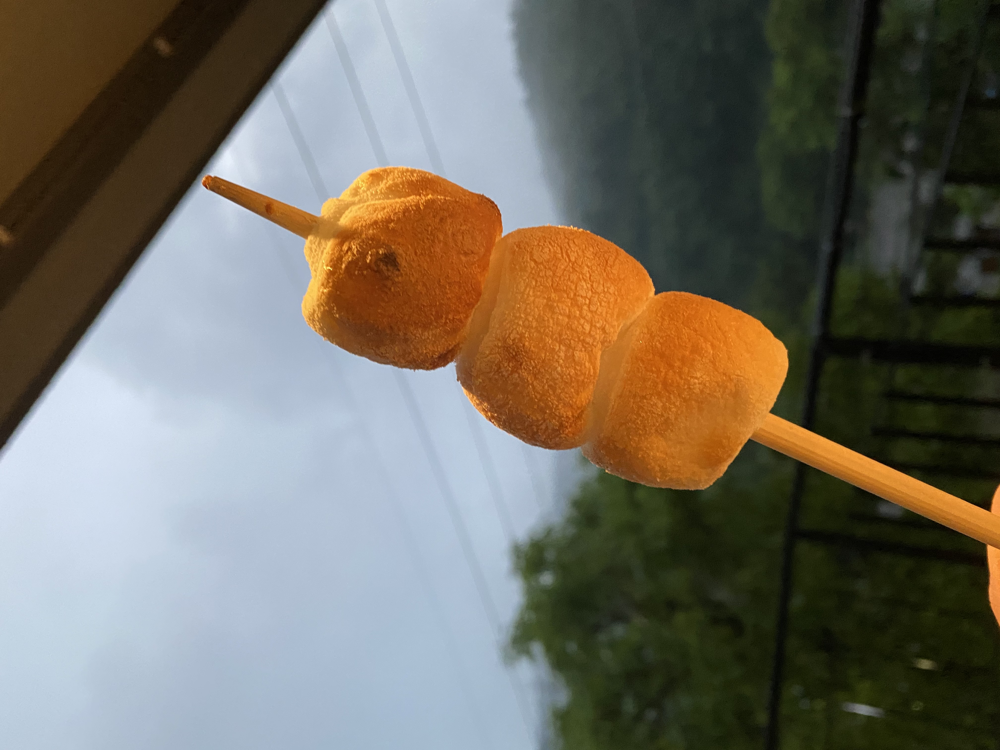

진수띠와 나는 4년차 잉꼬 부부
우린 이제 서로를 너무 잘알G 도저히 떨어 질 수가 없G
 나는 모든것을 할 수 있는 능력은 없다.
그러나 무언가는 분명히 할 수 있다.
모든것을 할 수 는 없기에 내가 할 수 잇는 무언가를 놓칠 일은 없다.
화는 부정적인 요소를 과장하거나 없는 사실을 지어내는데에서 시작되므로 정확한 현실 판단과는 거리가 멀다.
그러나 막상 화가 나있을 때는 우리가 과장하고 있는지 전혀 알지 못한다.
무조건 내가 옳다고만 생각한다.
화가 나있을 때는 답이 명쾌하게 보인다.
"내가 옳아, 당신이 틀렸어, 당신이 변해야해" 화가 나있을 때는 상대방의 부정적인 면만 눈에 쏙쏙 들어온다.
아주 좁은 시각으로 상대방을 바라보게 되는 것이다.